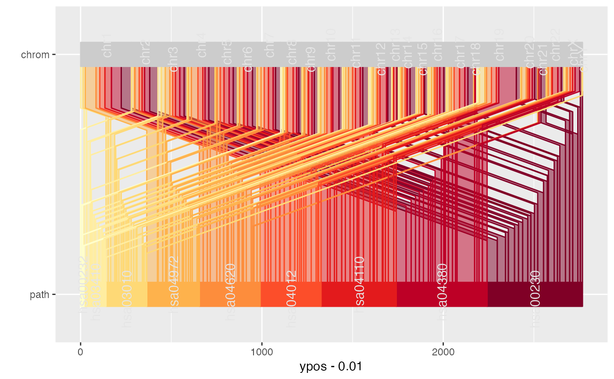

Table knownGene from track UCSC Genes was downloaded from the UCSC table browser for the human genome assembly (hg18, May 2006) and filtered for a selection of pathways associated with human metabolism was obtained from KEGG PATHWAY database. Bioconductor package KEGG.db was used to provide mappings between gene and pathway identifiers.
genesAn object of class data.frame with 2768 rows and 14 columns.
Fujita PA, Rhead B, Zweig AS, Hinrichs AS, Karolchik D, Cline MS, Goldman M, Barber GP, Clawson H, Coelho A, Diekhans M, Dreszer TR, Giardine BM, Harte RA, Hillman-Jackson J, Hsu F, Kirkup V, Kuhn RM, Learned K, Li CH, Meyer LR, Pohl A, Raney BJ, Rosenbloom KR, Smith KE, Haussler D, Kent WJ. The UCSC Genome Browser database: update 2011. Nucleic Acids Res. 2010 Oct 18. http://genome.ucsc.edu/index.html?org=Human&db=hg19&hgsid=289810087
Marc Carlson, Seth Falcon, Herve Pages and Nianhua Li (). KEGG.db: A set of annotation maps for KEGG. R package version 2.6.1.
Kanehisa, M., Goto, S., Sato, Y., Furumichi, M., and Tanabe, M.; KEGG for integration and interpretation of large-scale molecular datasets. Nucleic Acids Res. 40, D109-D114 (2012)
Kanehisa, M. and Goto, S.; KEGG: Kyoto Encyclopedia of Genes and Genomes. Nucleic Acids Res. 28, 27-30 (2000).
library(ggplot2)
library(RColorBrewer)
genes$chrom <- factor(genes$chrom, levels=c(paste("chr", 1:22, sep=""),
"chrX", "chrY"))
ggparallel(
list("path", "chrom"),
text.offset = c(0.03, 0,-0.03),
data = genes,
width = 0.1,
order = c(1, 0),
angle = 0,
color = "white",
factorlevels = c(sapply(unique(genes$chrom), as.character),unique(genes$path))
) +
scale_fill_manual(
values = c(brewer.pal("YlOrRd", n = 9), rep("grey80", 24)),
guide = "none"
) +
scale_colour_manual(
values = c(brewer.pal("YlOrRd", n = 9), rep("grey80", 24)),
guide = "none"
) +
coord_flip()
